Choosing living room color ideas sounds easy until you stand in front of twenty beige paint cards and suddenly every single one looks exactly the same.
I have been there, and honestly, choosing the right color takes more thought than simply picking a shade you like.
The right living room color can make your space feel calmer, brighter, warmer, and much more expensive without changing your furniture.
I especially like colors that create a soft backdrop while still giving the room enough personality to feel intentional.
So, what actually makes a living room feel calm and sophisticated?
Color temperature, undertones, natural light, and the way you combine shades all matter.
Let us get into the details before we start picking paint colors.

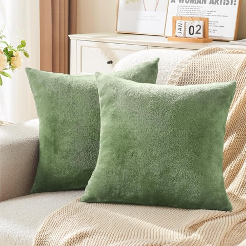
BEDELITE Velvet Pillow Covers with Zipper, Sage Green, 18x18 Inches, 2 Pack
Shop on Amazon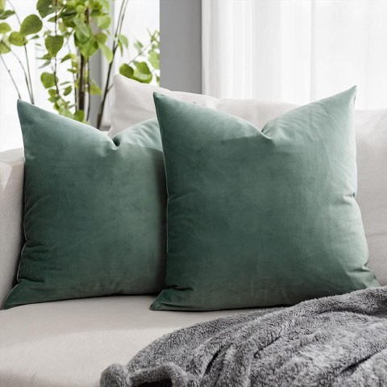
Sage Couch Velvet Throw Pillow Covers 18x18 inch Set of 2 with Zipper Decorative Luxury Soft Solid Square Cushion Covers Case for Sofa Bed Living Room Car
Shop on AmazonShould the Walls and Trim Match?
Matching walls and trim can create a seamless, sophisticated look, especially when you use a soft neutral.
You can also create subtle contrast by choosing a slightly lighter or darker trim color.
For example, warm beige walls with creamy white trim can create a traditional appearance, while matching both colors can create a more contemporary feeling.
I personally prefer subtle contrast when the room has interesting architectural details.
Why hide beautiful molding behind a wall-to-wall wash of color?
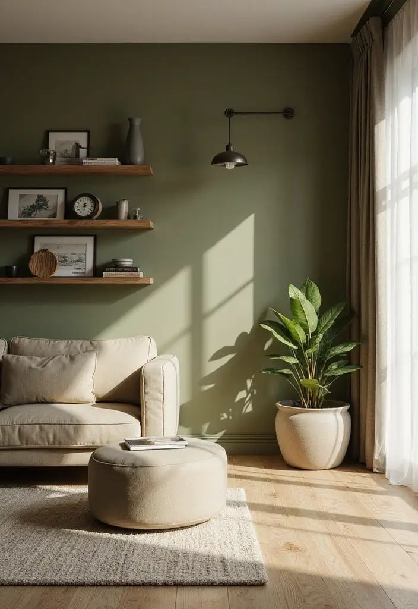
5 Pcs Paint Sample Boards 12" x 9" Paint Color Test Panels
Shop on Amazon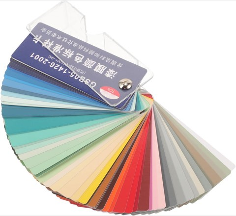
Gadpiparty Paint Color Sample Cards Paint Samples for Color Matching Standard Sample Card Set for Diy Projects Floor Hardware Portable 3.74 X 1.57 X 1.18 in
Shop on AmazonWhat Living Room Colors Work Best With Wood Furniture?
Wood furniture gives you a fantastic starting point because natural wood already brings warmth into the room.
Light oak works beautifully with warm white, sage, dusty blue, beige, and soft gray.
Walnut and darker woods can handle cream, taupe, olive, charcoal, and dusty rose particularly well.
If your furniture has strong orange or red undertones, avoid choosing another competing warm color without testing it first.
Too many warm undertones can make a room feel visually heavy.
How to Make Neutral Living Room Colors Look Expensive
Neutral colors can sometimes look boring when you rely on color alone.
The solution involves texture, contrast, proportion, and materials.
If you choose a beige or warm white wall, introduce different textures through your furniture and accessories.
Try combining linen curtains, wool or woven rugs, wooden furniture, ceramic accessories, boucle upholstery, leather details, and brushed metal lighting.
I would rather see a simple beige room with beautiful texture than a room packed with ten competing colors.
Sophistication rarely comes from adding more.
Sometimes it comes from editing.
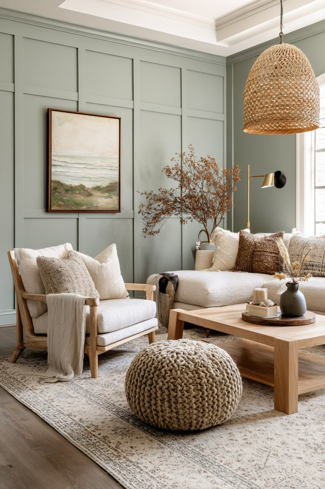
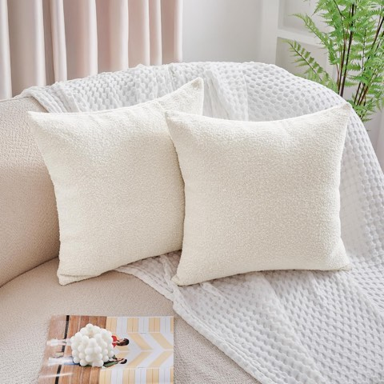
Deconovo Boucle Pillow Covers Set of 2, Textured Throw Pillow Covers for Living Room Sofa, Modern Decorative Couch Pillows, NO Pillow Insert, Ivory White, 18x18 Inch
Shop on Amazon
How Lighting Changes Your Living Room Color
Never judge a paint color from a tiny sample under one light source.
Natural sunlight can dramatically change how a color appears.
Artificial bulbs can also shift the appearance toward warmer or cooler tones.
Before committing, test your chosen color on multiple walls.
Check it during the morning, the afternoon, the evening, and under artificial lighting.
I always recommend living with the samples for a few days.
Your eyes need time to stop reacting to the novelty of the color.
Color does not just add a pleasant quality to a design, it reinforces whatever's already there.
That principle explains why context matters so much.
The same paint can look completely different beside a cream sofa versus a bright white sofa.
Warm vs Cool Living Room Colors
Understanding temperature can save you from an expensive paint mistake.
Warm colors generally include creamy whites, beige, taupe, terracotta, brown, and many earthy greens.
Cool colors often include blue, blue-gray, cool gray, and some green shades.
Your room does not need to use only warm or only cool colors.
In fact, mixing them can create much more interesting interiors.
A warm beige wall with dusty blue furniture can feel balanced because each temperature supports the other.
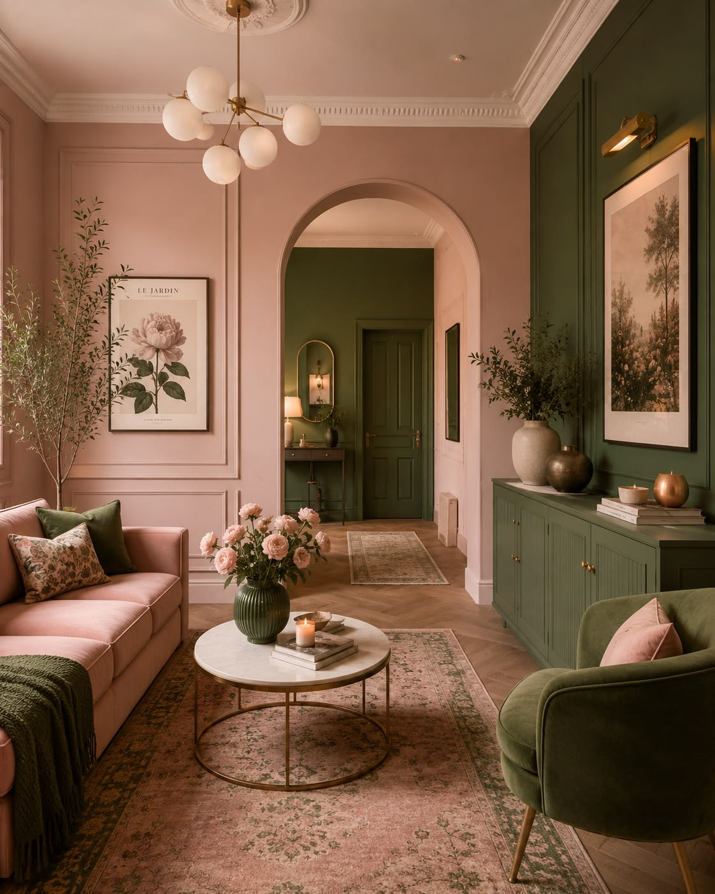
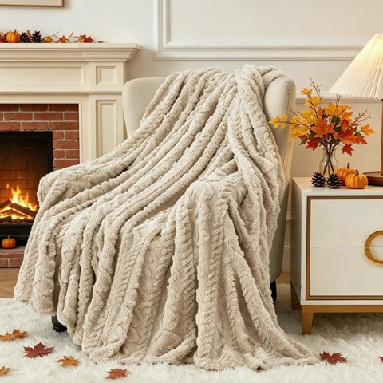
Aganear Fleece Throw Blanket for Couch, Fall Boho Blankets,50"x60" Khaki
Shop on AmazonHow to Combine Living Room Colors Without Making the Room Look Busy
Choosing one beautiful wall color solves only half the problem.
The rest comes from creating balance throughout the room.
I like using the 60-30-10 decorating principle as a simple starting point: 60 percent dominant color such as walls and larger furnishings, 30 percent secondary color such as curtains, rugs, or chairs, and 10 percent accent color through artwork, cushions, and accessories.
You do not need to follow those percentages literally.
Think of them as a visual guide.
For example, imagine warm white walls with a beige sofa and olive green accents.
The palette feels calm because the colors relate to one another rather than competing for attention.
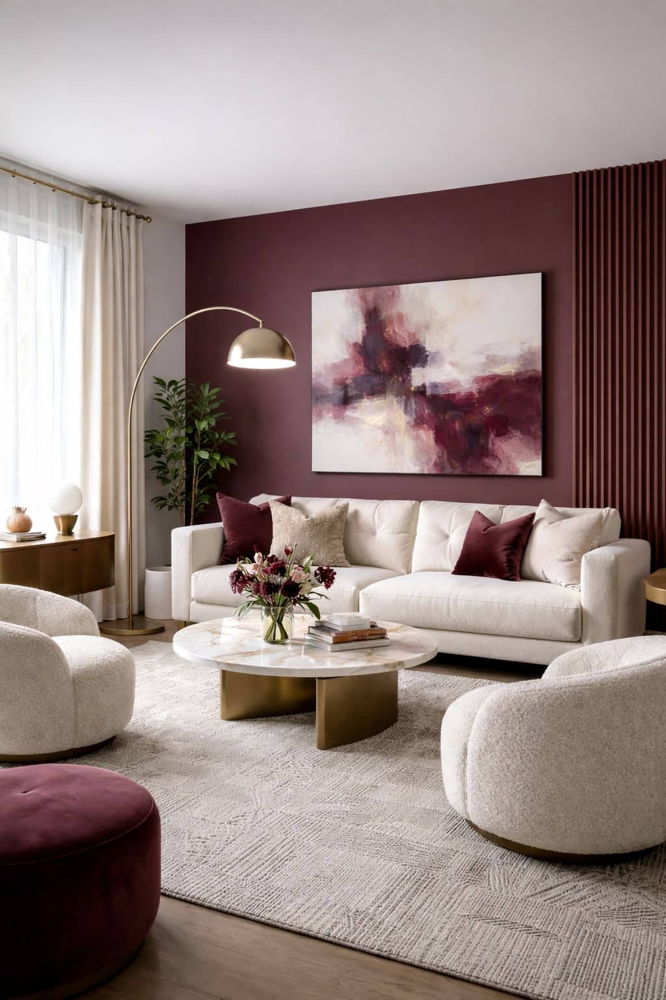
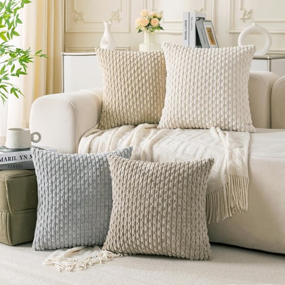
Set of 4 Neutral Decorative Throw Pillow Covers 18x18 Inch Corduroy Pillow Covers for Bed Couch Sofa Living Room Soft Square Cushion Cases
Shop on Amazon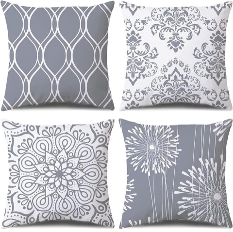
Coliuso Decorative Throw Pillow Covers 18x18 Set of 4, Grey and White Modern Simple Square Pillow Case Cushion Cover for Sofa Couch Farmhouse Outdoor Living Room (Gray and White, 18" x18")
Shop on Amazon15 Living Room Color Ideas for a Calm and Sophisticated Space
1. Deep Brown Living Room Color
Brown has returned to interiors in a big way, and a deep earthy brown can create an incredibly cozy living room.
I would use this option when the room has enough natural or artificial lighting to support a darker wall color.
Otherwise, the space could feel heavier than you intended.
Balance deep brown with lighter furniture, cream textiles, natural wood, and reflective accessories.
Ever noticed how some dark rooms feel luxurious rather than gloomy?
Contrast usually creates that difference.
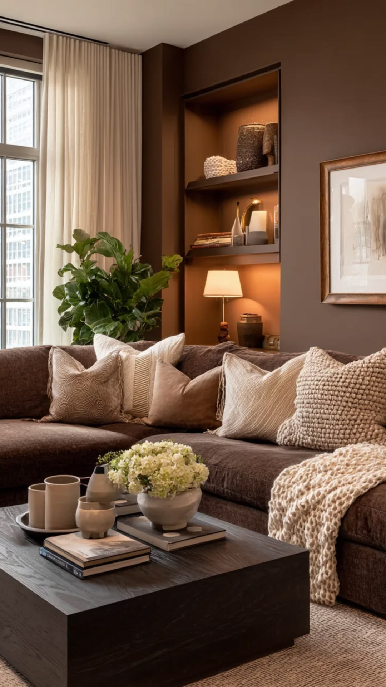
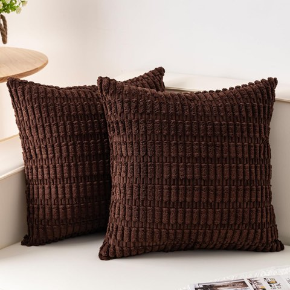
Pack of 2 Corduroy Decorative Throw Pillow Covers 18x18 Inch, Dark Brown
Shop on Amazon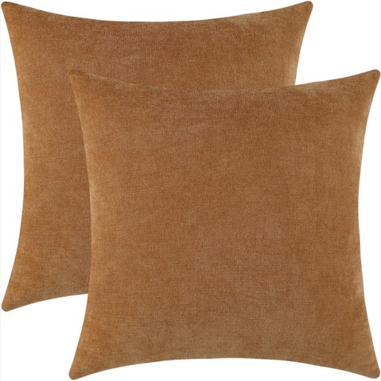
Jeneoo Golden Brown Decorative Throw Pillow Covers Soft Chenille Comfy Square Couch Cushion Cases for Living Room Sofa Decor (Set of 2, 18 x 18 Inches)
Shop on Amazon2. Dusty Rose Living Room Color
Dusty rose can create a surprisingly sophisticated living room when you choose the right version.
Forget overly bright pink.
Look for muted rose, blush beige, or dusty pink with subtle gray or brown undertones.
I especially like this shade with cream furniture, dark wood, antique brass, and soft brown accents.
It creates warmth while keeping the palette gentle.
The trick involves choosing a dusty version rather than a sugary pink.
That small distinction can completely change the atmosphere.
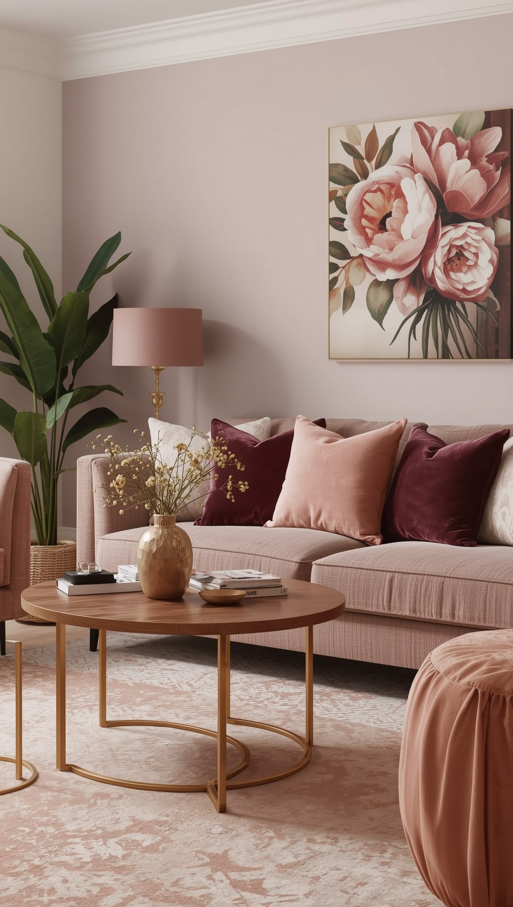
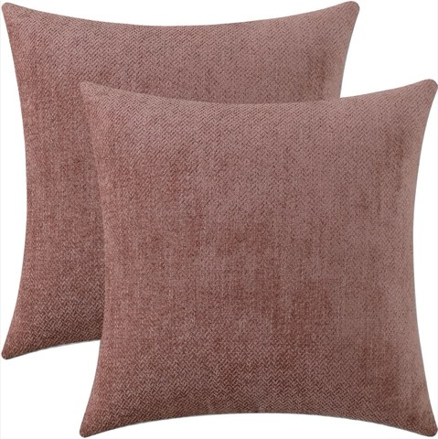
Jeneoo Dusty Rose Decorative Throw Pillow Covers Soft Chenille Comfy Square Couch Cushion Cases for Home Livingroom Sofa Decor (Set of 2, 18 x 18 Inches)
Shop on Amazon3. Soft Terracotta Living Room Color
Terracotta brings warmth and personality into a living room without requiring a bright orange wall.
Choose a muted terracotta with earthy brown or dusty undertones.
The result can feel warm, Mediterranean, Southwestern, or organic depending on the furniture.
I prefer using terracotta selectively.
If you already have colorful furniture, consider using it on one wall or introducing it through textiles instead.
Pair it with cream, walnut, olive, natural linen, and warm brass.
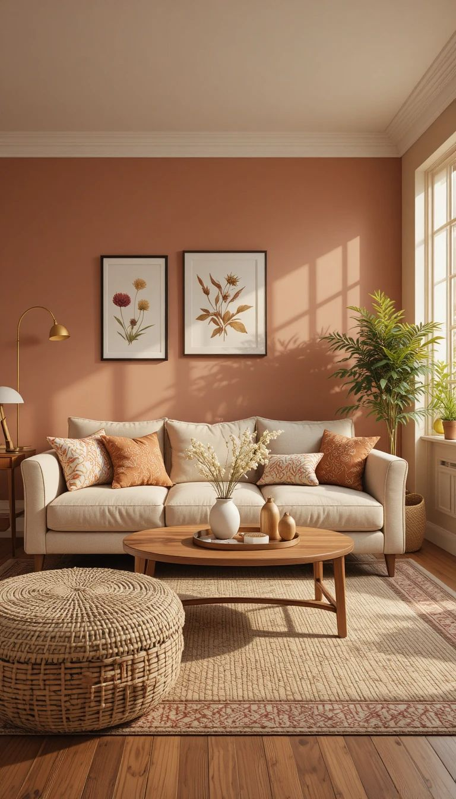
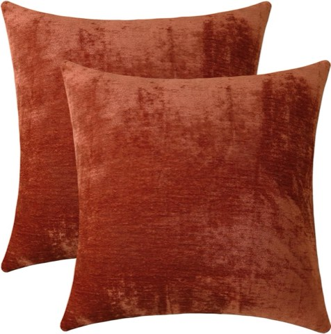
Jeneoo Terracotta Decorative Throw Pillow Covers Soft Chenille Comfy Solid Rust Couch Cushion Case Decor (Set of 2, 18 x 18 Inches)
Shop on Amazon
ZWJD Rust Throw Pillow Covers 18x18 Set of 2 Chenille Fall Pillow Covers with Elegant Design Soft and Luxurious Decorative Throw Pillows for Couch, Bed, and Home Decor
Shop on Amazon4. Warm Gray Living Room Color
Warm gray offers the polished appearance of gray without the icy feeling that some cool grays create.
This color works especially well with contemporary furniture, light wood, cream fabrics, and black accents.
If you already have beige furniture but want something slightly more modern on the walls, warm gray living room color ideas deserve a spot on your shortlist.
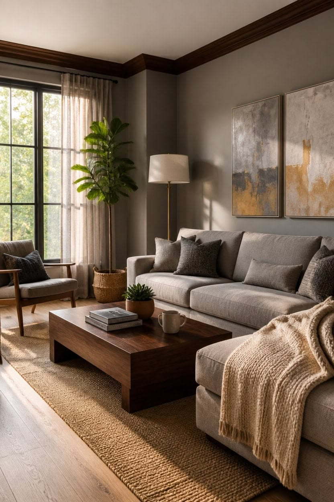
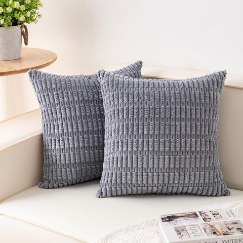
Pack of 2 Corduroy Decorative Throw Pillow Covers 18x18 Inch, Light Grey
Shop on Amazon5. Charcoal Gray Living Room Color
Want something moodier?
Charcoal gray can create serious drama while maintaining a sophisticated appearance.
I would not automatically paint every wall charcoal, though.
Dark colors need thoughtful lighting and furniture choices.
Use charcoal with warm whites, natural wood, caramel leather, cream upholstery, or brass accents.
The contrast can make the room feel incredibly intentional.
Charcoal works best when you embrace the mood instead of trying to make the room look bright and airy.
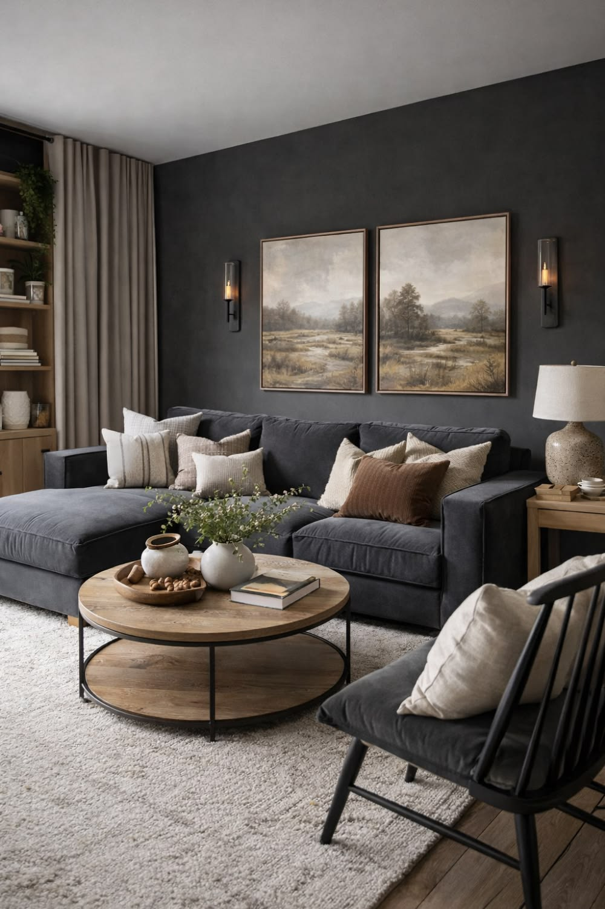
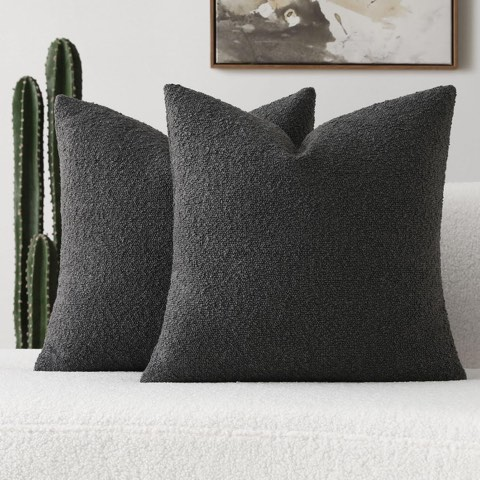
FUTEI Pack of 2 Boucle Textured Throw Pillow Covers 18x18 Inch, Dark Grey
Shop on Amazon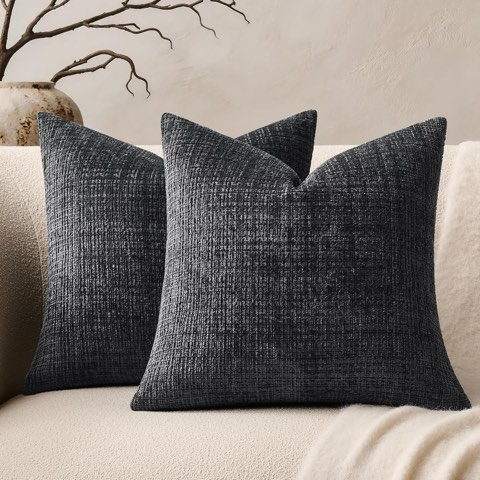
ZeeMart Fine-Textured Throw Pillow Covers Set of 2, 18x18 Inch Charcoal
Shop on Amazon6. Creamy Greige Living Room Color
A lighter creamy greige can create one of the easiest sophisticated palettes to decorate around.
It offers warmth without pushing the room toward obvious cream or beige.
You can then introduce stronger colors through pillows, artwork, curtains, and accessories.
I particularly like this strategy for open-plan homes because the color can connect the living room with nearby spaces without creating harsh visual breaks.
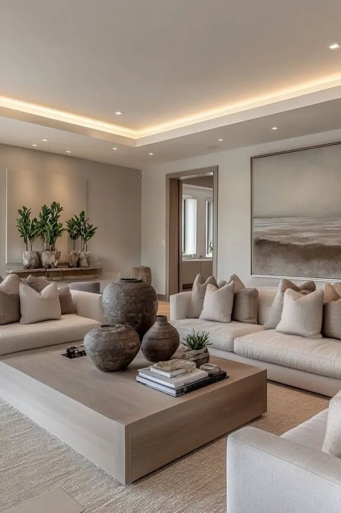
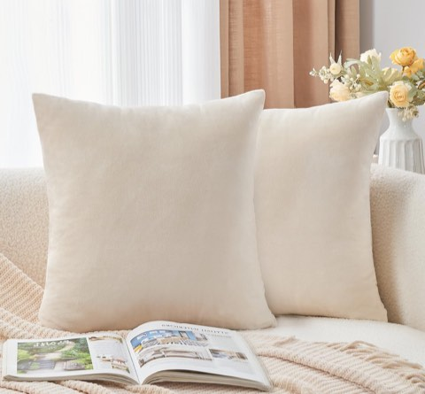
Throw Pillow Covers Neutral Beige Set of 2 18x18 Inch Pillow Covers, Soft Velvet Farmhouse Decorative Pillowcases for Couch Sofa Bed, Home Boho Decor, Modern Cushion Covers
Shop on Amazon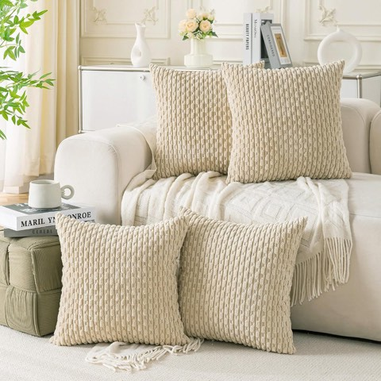
Set of 4 Beige Decorative Throw Pillow Covers 18x18 Inch Corduroy Pillow Covers for Bed Couch Sofa Living Room Soft Square Cushion Cases
Shop on Amazon7. Mushroom Living Room Color
Mushroom sits somewhere between beige, taupe, and gray.
It gives you the warmth of earthy neutrals while adding enough gray to keep the room current.
This shade works particularly well in spaces with natural materials.
Think stone, wood, linen, leather, rattan, and ceramic accessories.
I would choose mushroom when you want a cozy living room color that still feels grown-up and refined.
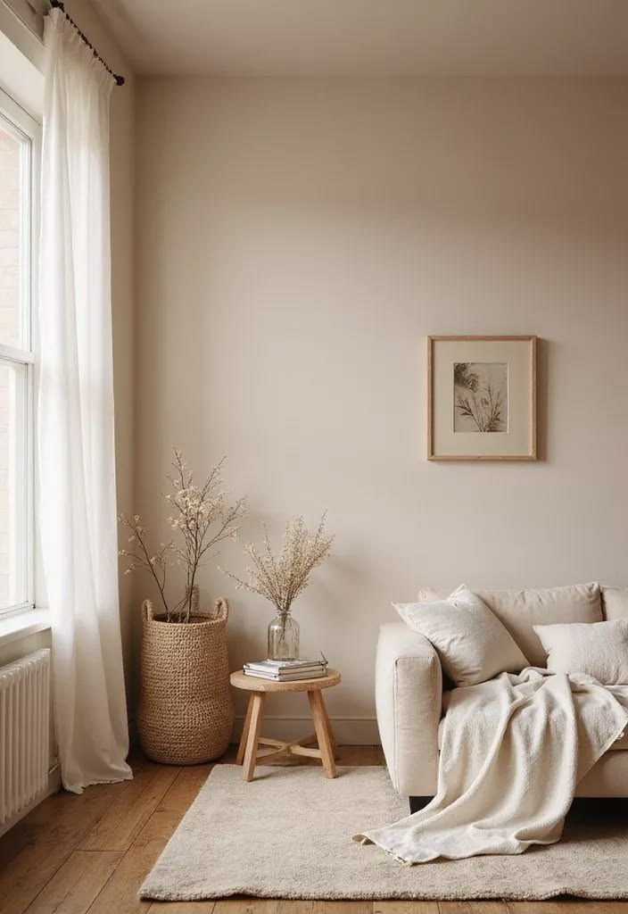
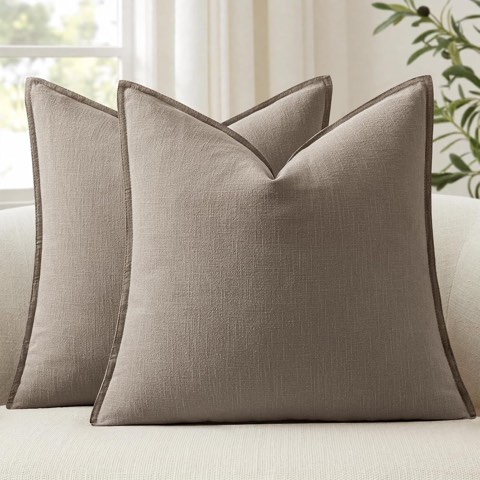
ANRODUO Decorative Linen Pillow Covers 18x18 Inch Mushroom Brown Pack of 2
Shop on Amazon
8. Blue Gray Living Room Color
Blue gray offers another clever option when you want color without overwhelming the room.
The gray component tones down the blue and creates a more sophisticated finish.
I like this approach when someone wants their walls to feel colorful but still neutral enough for flexible decorating.
Try combining blue gray walls with cream sofas, walnut furniture, ivory curtains, aged brass, and natural fiber rugs.
The result can feel polished without looking overly coordinated.
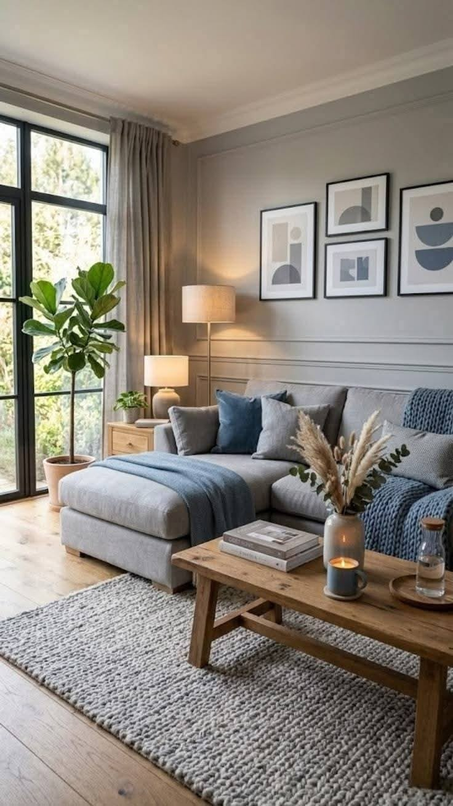
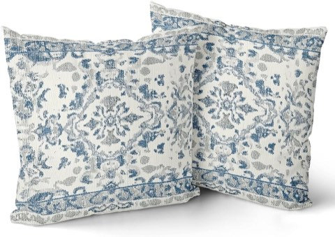
Giwawa Blue and Gray Throw Pillow Covers - 18x18 Inch Set of 2 Blue and White Boho Style Pillow Case Ethnic Design Decorative Cushion Cover for Farmhouse Couch Sofa Car Decor
Shop on Amazon9. Dusty Blue Living Room Color
Blue can create a wonderfully peaceful atmosphere, but I would avoid extremely bright blues when the goal involves calm sophistication.
Instead, look for dusty blue, muted blue-gray, or soft slate blue.
These shades can work beautifully with white trim, natural oak, cream sofas, and warm metallic accents.
They also suit coastal, traditional, transitional, and contemporary interiors.
A dusty blue living room color can feel especially beautiful in rooms with plenty of natural light.
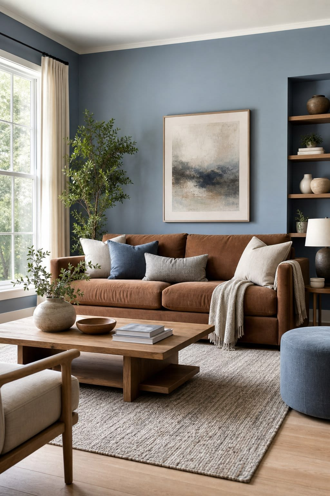
10. Olive Green Living Room Color
Olive green gives you more richness than sage while keeping an earthy character.
I particularly like olive in living rooms with traditional furniture or darker wood because the color creates an elegant, collected feeling.
If you worry that green walls might feel overwhelming, use olive on one feature wall or choose a lighter olive with plenty of cream around it.
The best rooms have something to say about the people who actually live in them.
A sophisticated living room should still look like someone actually lives there.
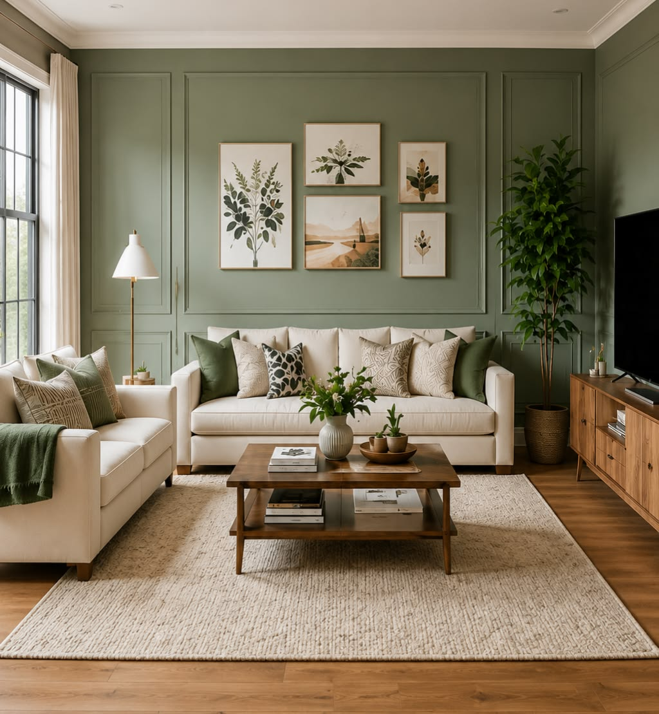
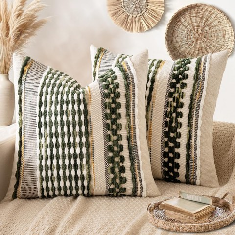
ANRODUO Boho Decorative Pillow Covers Olive Green Stripe 18x18 Pack of 2
Shop on Amazon11. Sage Green Living Room Color
Sage green has become a favorite for calm interiors, and I completely understand why.
The muted green creates a connection with nature without making the room feel like a garden center.
Soft sage works particularly well with cream, warm white, natural wood, tan leather, and aged brass.
I would choose a dusty or grayish sage rather than an extremely bright green if sophistication remains the priority.
Best combinations include sage and cream, sage and warm wood, sage and camel, sage and brass, and sage and soft black.
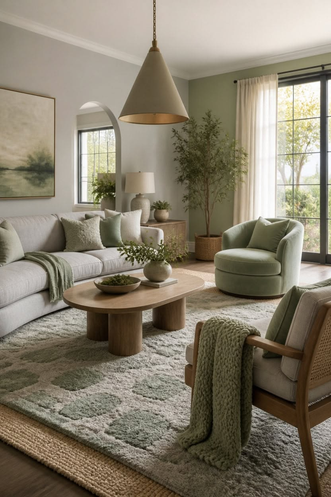
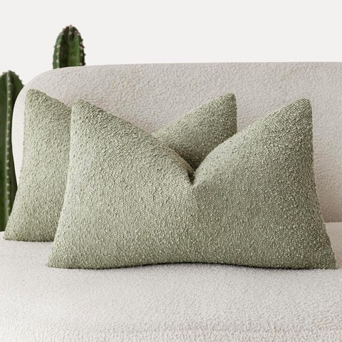
Foindtower Cozy Textured Boucle Lumbar Throw Pillow Cover 12x20 Dusty Green
Shop on Amazon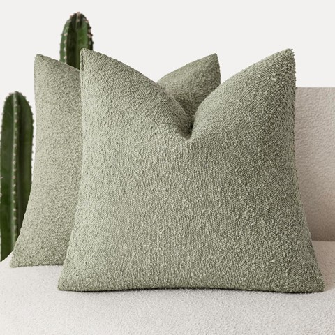
Foindtower Decorative Textured Boucle Throw Pillow Covers 16x16 Dusty Green
Shop on Amazon12. Taupe Living Room Color
Taupe brings more depth than many traditional beige shades.
It usually combines brown, gray, and subtle earthy undertones.
I love taupe in rooms with layered textures because the color gives those textures something to work against.
Think boucle chairs, linen curtains, chunky rugs, wooden tables, and ceramic accessories.
Does your living room feel slightly flat with pale neutrals?
A soft taupe living room color can add depth without introducing a dramatic dark wall.
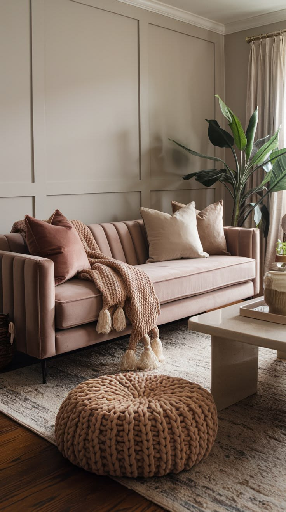
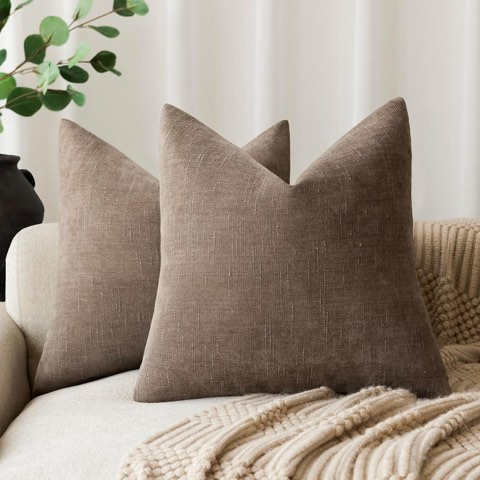
Foindtower Solid Textured Chenille Throw Pillow Covers 20x20 Inch,Taupe
Shop on Amazon13. Greige Living Room Color
Greige combines gray and beige, which gives you a wonderfully flexible neutral.
This color works especially well if you struggle to decide between warm beige and cool gray.
Greige can bridge the two while creating a sophisticated backdrop.
For me, the biggest advantage comes from its versatility.
You can decorate around greige with warm woods, black details, cream upholstery, or muted colors without fighting the wall color.
Choose greige when you want a neutral that feels modern but not cold.


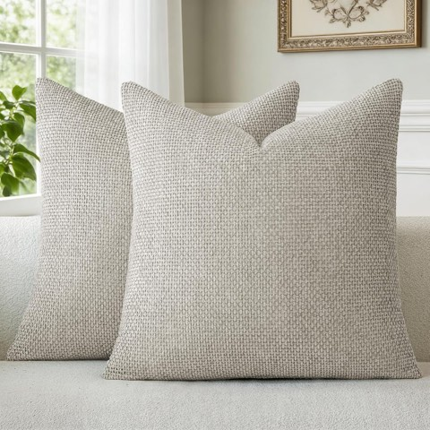
a moment Grey-Beige Chenille Throw Pillow Covers 18x18 Inch Pack of 2 Modern Decorative Throw Pillow Cases Farmhouse Cross Throw Pillowcases Home Decor for Sofa Bedroom Living Room
Shop on Amazon14. Soft Beige Living Room Color
If you want warmth without making your walls look obviously yellow, consider a soft beige.
Soft beige living room color ideas work particularly well with traditional, transitional, modern farmhouse, and organic interiors.
The shade creates a gentle background that lets furniture and artwork take some attention.
I often recommend beige for rooms where people want comfort first.
It feels welcoming without looking overly casual.
Pair beige walls with darker brown wood, creamy textiles, black accents, or muted green cushions for contrast.
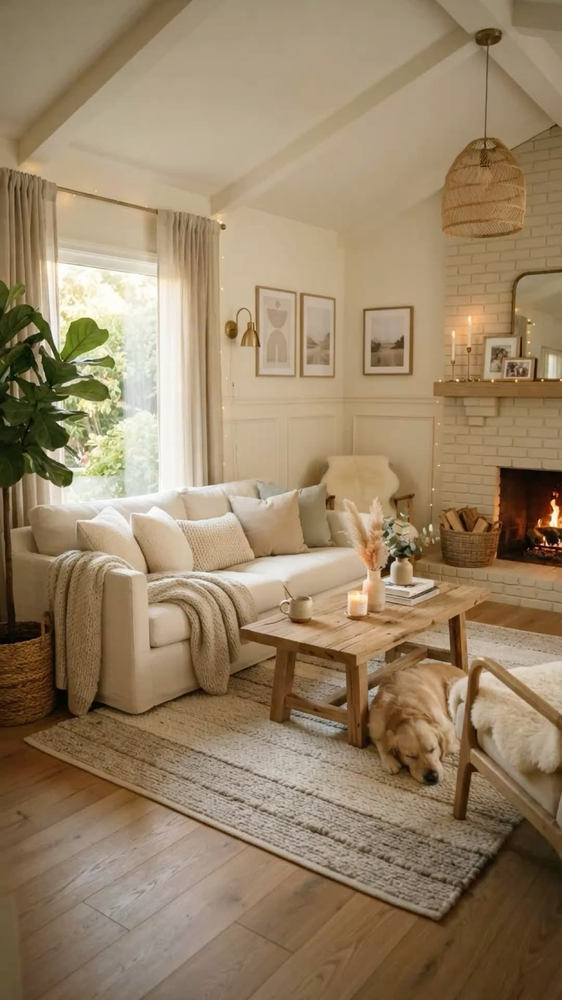

15. Warm White Living Room Color
Warm white remains one of my favorite choices when someone wants a sophisticated living room without committing to a strong color.
Unlike stark white, warm white can introduce subtle cream or beige undertones.
It works beautifully with natural wood, linen, woven textures, brass, and soft gray furniture.
I especially like warm white when a room has plenty of natural light.
It keeps the space bright while avoiding the slightly clinical feeling that some cool whites can create.
Try pairing it with natural oak furniture, beige upholstery, soft taupe accents, brass lighting, and textured cream rugs.
White is not really the absence of color, it is a genuinely powerful presence of its own, which is easy to forget when picking a shade.
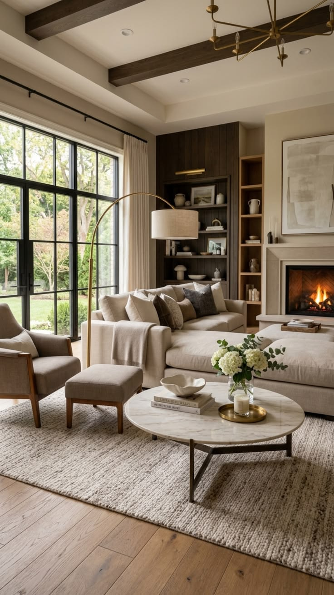
Foindtower Decorative Textured Boucle Throw Pillow Covers 18x18 Inch,Ivory
Shop on AmazonJeneoo Ivory Decorative Square Thick Throw Pillow Covers Fine Textured Boucle Couch Cushion Cases for Home Livingroom Sofa Decor, Set of 2, 18 x 18 Inch
Shop on AmazonHow Do You Choose a Living Room Color?
Start with the things you already own.
Your sofa, flooring, curtains, rugs, artwork, and wood tones can tell you which direction to take.
I recommend checking paint samples at different times of the day.
A shade that looks beautifully creamy at noon can suddenly look gray or yellow in the evening.
Paint has a funny habit of keeping us humble.
Pay particular attention to undertones.
Two beige colors might look almost identical on a paint card but behave very differently on a large wall.
For a calm and sophisticated room, look for warm or balanced undertones, muted rather than highly saturated colors, colors that work with your flooring, shades that complement your furniture, and enough contrast to prevent the room from looking flat.
If you want a timeless result, resist the temptation to chase whatever color dominates social media this month.
Trends can inspire you, but your living room should still feel good five years from now.
Mighty Board Minis Polystyrene Paint Color Test Panels, 12" x 9", Set of 5, White
Shop on Amazon
FAVOMOTO 1 Set Standard Paint Sample Cards, 365 Colors Walls Paint Chips Samples Architecture Contrast Sheets Color Chart for Painting Projects
Shop on AmazonWhat Colors Make a Living Room Feel Calm and Sophisticated?
Calm living rooms usually rely on colors that feel easy on the eyes rather than extremely saturated shades.
Soft neutrals, muted greens, warm whites, gentle taupes, dusty blues, and understated grays can create that relaxed atmosphere.
Sophistication comes from the combination rather than the paint color alone.
I have found that even a simple beige can look incredibly polished when you pair it with warm wood, textured fabrics, aged metal, and carefully chosen artwork.
Color has a way of directly influencing mood that goes beyond just how a wall looks.
You do not need a complicated palette either.
In fact, I often prefer a three-color approach: one dominant wall color, one secondary furniture or textile color, and one accent shade.
Before choosing anything, look at the room itself.
Does it receive strong afternoon sunlight?
Does it face north?
Do you have dark floors or light furniture?
These details can completely change how a paint color looks.
Final Thoughts on Living Room Color Ideas
The best living room color ideas do more than make a wall look pretty.
They influence how the entire room feels, from the furniture and lighting to the textures and accessories you choose.
Warm white can keep things bright.
Beige and greige can create effortless flexibility.
Sage and olive can bring an earthy quality.
Dusty blue can add tranquility, while taupe, mushroom, brown, and charcoal can create depth.
Most importantly, choose a color that works with your actual room rather than choosing a color simply because it looks beautiful in someone else's house.
Take your samples home, watch them change throughout the day, and build your palette around the things you already love.
And if you end up staring at twelve nearly identical beige samples on your living room floor at 10 p.m., do not worry about it too much.
That is practically a rite of passage for anyone who takes home decor seriously.